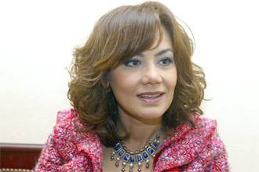

|
|

اولین کاندیدای ریاست جمهوری زن در مصر
ترجمه از سوئدی: شهرزاد امین
شنبه10 اردیبهشت 1390
تغییر برای برابری : اولین زن کاندیدای ریاست جمهوری مصر خود را معرفی کرد. بوتهاینا کمال، چهره مشهور رسانه ایی و فعال حقوق زنان خبر کاندیداتوری در انتخابات ریاست جمهوری مصر در اواخر سال جاری را رسمن اعلام کرد. بوتهاینا کمال یکی از ژورنالیستهای مشهور و خبرساز رادیو و تلویزیون در دنیای عرب است. کمال از نظر بسیاری شخصیتی جنجالی و نامتعارف است چرا که او مباحث مربوط به روابط جنسی را در برنامه های تلویزیونی اش مطرح می کند. او از اواخر دهه نود میلادی بحث علنی حول تابوهایی چون آزارهای جنسی، خشونت خانگی علیه زنان و سلب حقوق دمکراتیک مردم را وارد عرصه عمومی جامعه کرد و با شوهای رادیو و تلویزیونی اش این مسائل را به خانه های مردم برد.
مبارک برنامه ی رادیویی کمال را ممنوع کرد
کمال در زمان مبارک نیز فردی نا خوشایند و دردسر ساز تلقی می شد. او زنی بود که گفتگو حول سه تابو یعنی مذهب، سکس و سیاست را به رادیو کشانده بود. نکته ی مهم کار کمال این بود که او در برنامه های خود بدنبال پاسخهای سکولار برای حل مشکلات جنسی و شخصی مردمی که به او زنگ می زدند بود و مردم از این موضوع استقبال می کردند. او به سوالاتی پاسخ می داد که رهبران مذهبی و امامان نقش انحصاری پاسخگویی به آنان را برای خود قایل هستند. سال 1996 برنامه رادیویی کمال با نام "ایعترافات لیلیه" اعترافات شبانه، در میان توده مردم مصر بسیار محبوب شده بود. مردم زنگ میزدند و از او در مورد مسائل شخصی شان مشاوره می خواستند. برنامه آنقدر پر شنونده و محبوب شد که مبارک شخصن دستور توقیف برنامه را داد. بعد از این ماجرا بود که کمال به اجرای برنامه های تلویزیونی از طریق کانالهای ماهواره ایی عربی ادامه داد. او علاوه بر فعالیت های حرفه ایش، در جنبش زنان و سازمان های حقوق بشری درجامعه مصر نیز فعالیت داشته است.
زنان مصری خواهان سهم برابرند

خبر تصمیم تونس در مورد اجباری بودن معرفی تعداد متساوی زنان و مردان در لیست انتخاباتی مجلس در 24 جولای منجر به بحثهایی در میان تشکل های زنان مصری شده است. آنها می گویند: "زنان در کنار مردان در انقلاب شرکت کردند و در تمامی مراحل انقلاب حضور داشتند... چگونه است که انقلاب تونس الهام بخش ما درانقلابمان بود اما تصمیم آنان در دخیل کردن زنان در پستهای سیاسی تا ثیری بر ما نمی گذارد". به نقل از "مرکز حقوق زنان مصر" [1] طی یک اطلاعیه مطبوعاتی درهفته گذشته.
تشکلهای زنان نسبت به کنار گذاشته شدن زنان از پستهای سیاسی هشدار می دهند. "مرکز حقوق زنان مصر"، از جمله به انتخاب شهرداران جدید که در میان آنان علیرغم وعده هایی از طرف دولت حتی یک زن هم دیده نمی شود، اشاره می کند. این مرکز حذف زنان از پست های شهرداری را پیش زمینه ای برای راه ندادن زنان به پستهای مهم و تصمیم گیرنده می داند و نسبت به آن هشدار می دهد. این مر کز سپس سوالی را که همه تشکل های زنان با تاکید می پرسند مطرح می کند:" آیا انقلاب مصر زن مصری را به عقب خواهد برد ؟" مرکز زنان مصر، به شورای ارتش و دولت گوشزد میکند که باید حضور نمایندگان زن در تمامی ارگانهای سیاسی را از آنجا که آنان نیمی از شهروندان جامعه اند تضمین کنند.
بوتهاینا کمال به احتمال زیاد تنها زن کاندیدای ریاست جمهوری مصر نخواهد بود. اما نزدیکترین انتخابات در مصر انتخابات مجلس در ماه سپتامبر است. البته لیستهای انتخاباتی احزاب هنوز آماده نیستند ولی تشکلهای زنان بر حضور هر چه بیشتر کاندیداهای زن در این لیستها تاکید می ورزند و امیدوارند که به تبعیت از الگوی تونس، زنان نیمی از کاندیداها را تشکیل دهند.
*مطلب به نقل از نشریه پرسپکتیو سوئد به قلم شعله ایرانی
يادداشت
[1] (Egyptian Center for Women’s Rights (ECWR